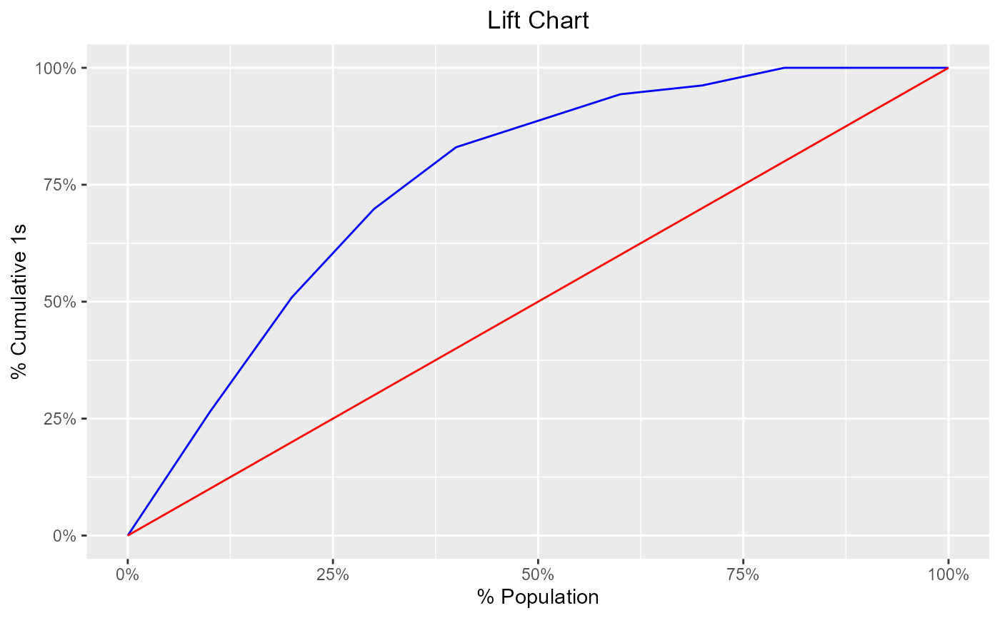

Compute sensitivity, specificity, accuracy and KS statistics to generate the lift chart and the KS chart.
blr_gains_table(model, data = NULL) # S3 method for blr_gains_table plot( x, title = "Lift Chart", xaxis_title = "% Population", yaxis_title = "% Cumulative 1s", diag_line_col = "red", lift_curve_col = "blue", plot_title_justify = 0.5, print_plot = TRUE, ... )
| model | An object of class |
|---|---|
| data | A |
| x | An object of class |
| title | Plot title. |
| xaxis_title | X axis title. |
| yaxis_title | Y axis title. |
| diag_line_col | Diagonal line color. |
| lift_curve_col | Color of the lift curve. |
| plot_title_justify | Horizontal justification on the plot title. |
| print_plot | logical; if |
| ... | Other inputs. |
A tibble.
Agresti, A. (2007), An Introduction to Categorical Data Analysis, Second Edition, New York: John Wiley & Sons.
Agresti, A. (2013), Categorical Data Analysis, Third Edition, New York: John Wiley & Sons.
Thomas LC (2009): Consumer Credit Models: Pricing, Profit, and Portfolio. Oxford, Oxford Uni-versity Press.
Sobehart J, Keenan S, Stein R (2000): Benchmarking Quantitative Default Risk Models: A Validation Methodology, Moody’s Investors Service.
Other model validation techniques:
blr_confusion_matrix(),
blr_decile_capture_rate(),
blr_decile_lift_chart(),
blr_gini_index(),
blr_ks_chart(),
blr_lorenz_curve(),
blr_roc_curve(),
blr_test_hosmer_lemeshow()
model <- glm(honcomp ~ female + read + science, data = hsb2, family = binomial(link = 'logit')) # gains table blr_gains_table(model) #> decile total 1 0 ks tp tn fp fn sensitivity specificity accuracy #> 1 1 20 14 6 22.33346 14 141 6 39 26.41509 95.91837 77.5 #> 2 2 20 13 7 42.09986 27 134 13 26 50.94340 91.15646 80.5 #> 3 3 20 10 10 54.16506 37 124 23 16 69.81132 84.35374 80.5 #> 4 4 20 7 13 58.52907 44 111 36 9 83.01887 75.51020 77.5 #> 5 5 20 3 17 52.62482 47 94 53 6 88.67925 63.94558 70.5 #> 6 6 20 3 17 46.72058 50 77 70 3 94.33962 52.38095 63.5 #> 7 7 20 1 19 35.68220 51 58 89 2 96.22642 39.45578 54.5 #> 8 8 20 2 18 27.21088 53 40 107 0 100.00000 27.21088 46.5 #> 9 9 20 0 20 13.60544 53 20 127 0 100.00000 13.60544 36.5 #> 10 10 20 0 20 0.00000 53 0 147 0 100.00000 0.00000 26.5 # lift chart k <- blr_gains_table(model) plot(k) 